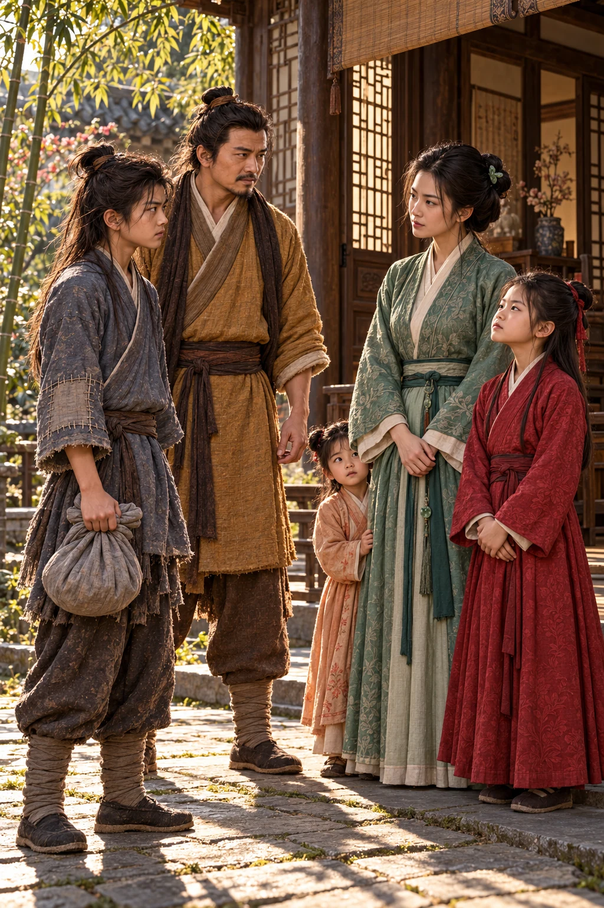

Sebuah perjalanan di dunia persilatan
Saga
Dani Moan
Seorang remaja meninggalkan rumah yang kehilangan suara. Di jalan yang membawanya ke dunia persilatan, pertolongan, kehilangan, dan ikatan baru mengubah arah hidupnya.
Daftar bab
6 bab tersedia- 01
Rumah yang Kehilangan Suara
Sebuah rumah kosong, kenangan keluarga, dan langkah pertama meninggalkan yang tersisa.
± 14 menit membaca
- 02
Bayang-Bayang di Kediaman Lu
Permintaan air membawa Dani ke sebuah halaman yang sedang menunggu kedatangan tamu.
± 12 menit membaca
- 03

Pintu yang Terlambat Terbuka
Jalan keluar terbuka, tetapi Dani harus menghadapi batas pertolongan yang sanggup diberikannya.
± 14 menit membaca
- 04
Ayah di Jalan Terbalik
Di jalan, Dani bertemu seorang lelaki dengan pikiran kacau dan kasih sayang yang sulit dimengerti.
± 11 menit membaca
- 05

Di Bawah Atap Keluarga Guo
Sebuah keluarga menerima Dani; rasa curiga dan harga diri segera menguji tempat barunya.
± 13 menit membaca
- 06

Di Balik Pintu Batu
Harapan belajar membawa Dani ke Quanzhen, lalu menuju sebuah pintu batu di lereng Zhongnan.
± 12 menit membaca